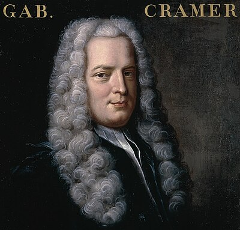

1704–1752
Swiss
Linear algebra, algebraic curves
Gabriel Cramer was a Genevan mathematician who became co-chair of mathematics at the Académie de Calvin at the remarkable age of twenty. The chair was shared — Cramer held it jointly with Giovanni Ludovico Calandrini, with the understanding that each would travel in alternate years to broaden his mathematical horizons. This arrangement took Cramer across Europe, where he met Johann Bernoulli, Euler, Fontenelle, and other leading figures.
Cramer is remembered primarily for a single result: Cramer's rule (1750), which gives an explicit formula for the solution of a system of $n$ linear equations in $n$ unknowns. If $Ax = b$ and $A$ is invertible, then $x_i = \det(A_i) / \det(A)$, where $A_i$ is $A$ with its $i$-th column replaced by $b$. The formula is elegant and theoretically important — it proves that the solution depends rationally on the coefficients — though for large systems it is computationally impractical.
His major publication, Introduction à l'analyse des lignes courbes algébriques (1750), was the first systematic treatment of algebraic curves. In it, Cramer classified curves by degree and studied their intersections, leading to what is now called Cramer's paradox: two cubic curves generically intersect in $3 \times 3 = 9$ points, but a cubic is determined by $\binom{3+2}{2} - 1 = 9$ points. So nine points should determine a unique cubic, yet two distinct cubics pass through them. Euler clarified the resolution: the nine intersection points are not in "general position."
Cramer also edited the collected works of both Bernoulli brothers. He died at 48, during a journey to the south of France undertaken for health reasons.
| Phase | Page | Referenced for |
|---|---|---|
| Phase 6 | Matrices and Change of Basis | Organised coefficients systematically to state his rule (1750) |
| Phase 6 | Determinants | Cramer's rule: $x_i = \det(A_i)/\det(A)$ (1750) |
| Phase 8 | Variation of Parameters | Cramer's rule applied to solve for parameter derivatives |